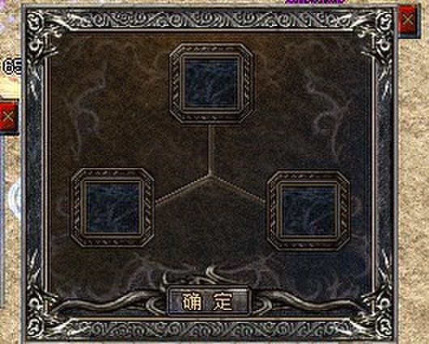

功能: 用来检测通过宝石升级装备的次数. 或 星星数量 格式: CheckItemupgradeCount 方式(0,1) 位置(0-12) 操作符(> = < ?) 次数(0-255) 说明:方式=0时检测正在升级的装备,方式=1时检测人物身上的装备.

例子: 检测武器是否已经升级10次.#IFCheckItemUpgradeCount 1 1 > 10#SAY你的武器已经升级了10次以上.